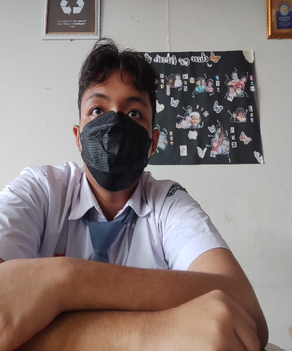

Service

Kursus Tari
Tempat dimana anda akan mengeksplorasi berbagai gaya tari, mulai dari tradisional hingga kontemporer.
PendaftaranSewa Busana
Tampil anggun dan istimewa tanpa harus membeli busana mahal, dengan koleksi busana elegan dan terkini.
Info lanjut

Owner
Haikal adalah budayawan sekaligus pemilik sanggar Harmoni yang terletak dikabupaten pesaman barat. Pria Kelahiran 07 Juli 1994 ini adalah anak sulung dari dua bersaudara. Haikal telah sukses mendirikan sanggar yang terkenal didaerah Pesaman, yaitu sanggar “Harmoni “. Hingga saat ini, Haikal telah membimbing banyak murid untuk mengembangkan dan melestarikan Seni Budaya.

Event Tari (maintenance)
Event lomba tari yg diadakan dipusat Harmoni Budaya tiap 1 Tahun sekali pada bulan November